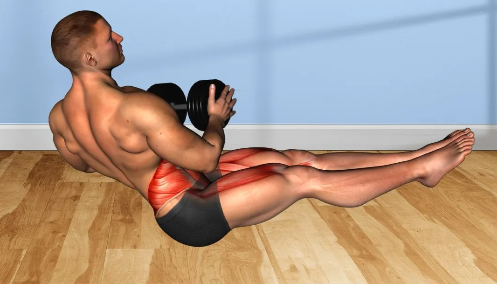

RUSSIAN TWINS - Intermedi
COM FER-HO PAS A PAS:
- Tomba’t amb l’esquena inclinada uns 45° respecte al terra.
- Eleva lleugerament les cames per incrementar la pressió al core.
- Agafa el pes amb les dues mans davant del pit.
- Gira el tronc cap a la dreta, portant el pes, i després cap a l’altre costat repetidament.
- Mantingueu el core actiu i l’esquena recta tot el temps.
SERIES:
- 3 sèries de 12-15 repeticions per costat.
- Descans de 30-45 segons entre sèries.
CONSELLS:
- Mou el pes lentament i amb control.
- Respira correctament: expira girant, inspira tornant al centre.
- Comença amb un pes moderat i augmenta gradualment si cal.
